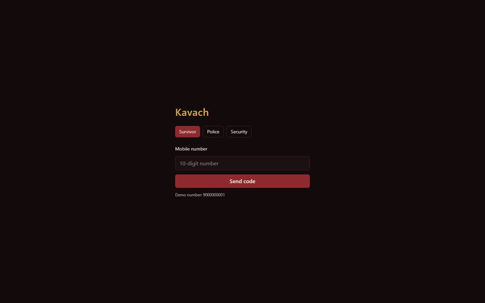
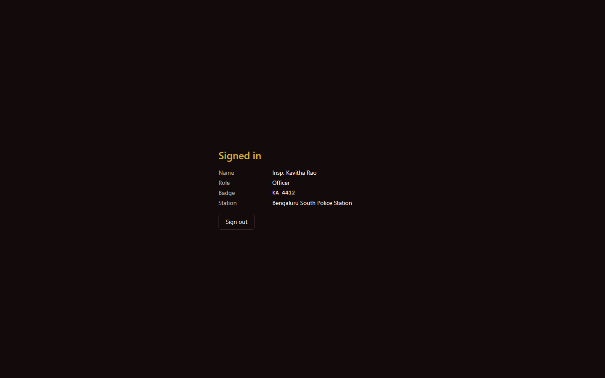
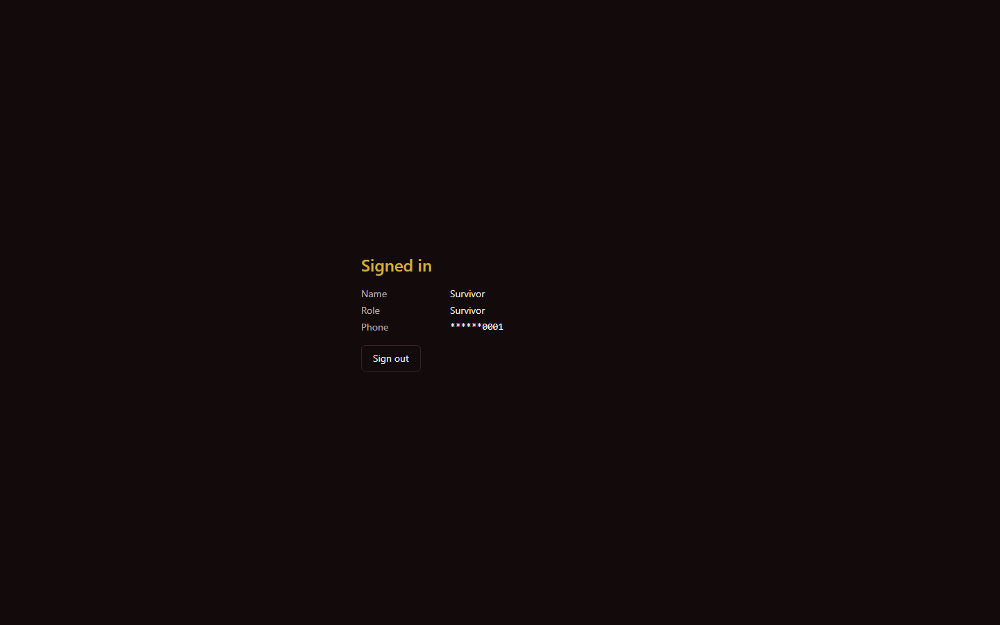

Kavach now has a working backend and sign-in for every role. Survivor identity is stored only as encrypted data, with the key kept in a separate folder, and every action is written to a tamper-evident log. The screens are plain placeholders until Phase 2 applies the design.
What was built
| Part | What it does |
|---|---|
| Database (SQLite) | Stores stations, users, sessions, cases, reveal requests, calls, public copies, alerts and the audit log. Case rows hold only the area and tokenised text, never the survivor's details. |
| Identity vault | Each identity field (name, phone, address, parents' names, school, age and more) is encrypted on its own with AES-256-GCM. Each value is bound to its case and field, so it cannot be copied onto another record. |
| Key storage | Encryption keys live in backend/keys/, apart from the database, and are excluded from git. A copied database alone is unreadable. |
| Survivor sign-in | Phone number plus a 6-digit one-time code. The phone is stored encrypted, with a keyed hash used only to find the account. Screens show it masked as ******0001. |
| Staff sign-in | Username and password (scrypt-hashed), then a 6-digit second-factor code. Wrong username and wrong password give the same message, so attackers cannot discover usernames. |
| Sessions | Random tokens; the database stores only their hash. Survivor sessions last 1 hour, staff sessions 8 hours. Tokens are kept in the browser tab's session storage, so they vanish when the tab closes. |
| Role checks | Every protected request checks the role. Survivors, police and security each have their own area and are redirected away from the others. |
| Audit log | Records sign-ins, failures and account creation. Each entry includes a hash of the previous one, so editing or deleting a row is detectable. It never stores personal data. |
| Hidden API docs | The automatic API documentation pages are switched off, so the system does not advertise its endpoints. |
| Report tooling | A script drives headless Chrome to screenshot the real app and print these reports to PDF after every phase. |
Checks run
| Check | Result | Status |
|---|---|---|
| API health through the web app's proxy | Responds OK | Pass |
| Officer sign-in (Insp. Kavitha Rao) | Signed in as officer, Bengaluru South | Pass |
| Supervisor sign-in (SHO Prakash Reddy) | Signed in as supervisor | Pass |
| Security admin sign-in (Anita Desai) | Signed in as security | Pass |
| Survivor sign-in by phone code | Signed in; phone shown as ******0001 | Pass |
| Wrong code | Rejected: "Wrong code. 4 attempts left." | Pass |
| Reusing a code that worked | Rejected | Pass |
| Wrong password and unknown username | Same message for both | Pass |
| Request with no session | Rejected: "Please sign in." | Pass |
| Invalid phone number | Rejected with a clear message | Pass |
| Officer opens the security area | Redirected back to the police area | Pass |
| Plain-text search of the database file for 5 seeded names and phone numbers, plus the demo password | None found | Pass |
| Audit log hash chain | Intact | Pass |
Encryption evidence
A raw vault row, as stored on disk (the survivor's name field of a decoy case):
KV-2026-BLR-0003 · name · D325AF641D41C8E035A115249A61C0172C419151BA6A1E2C…
Only the server, holding the key file, can turn this back into the name. The neighbourhood ("Banashankari, Bengaluru") is stored readable on purpose, because officers are meant to see the area only.
Synthetic demo data
| Type | Records |
|---|---|
| Stations | Bengaluru South, Mysuru City, New Delhi Central |
| Officers (6, 4 women) | Insp. Kavitha Rao, SI Meena Iyer, SI Rohit Sharma, Insp. Lakshmi Gowda, SI Arjun Patil, Insp. Neha Verma |
| Supervisors | SHO Prakash Reddy, SHO Shalini Hegde, SHO Vikram Singh |
| Security admin | Anita Desai, Cyber Cell |
| Survivor | Demo phone 9000000001 |
| Decoy cases | 5 hidden records assigned to no one. They raise an alarm when opened once Phase 6 switches them on. |
All names, numbers and places are invented. Demo staff password: kavach@123. Codes are shown on screen in demo mode instead of being sent by SMS.
Screens (placeholders)



How to run it
- Both servers start from
.claude/launch.json:kavach-apion port 8000 andkavach-webon port 5173. - Open
http://localhost:5173. Pick a tab, choose a demo account, then press "Use it" to fill the simulated code. - To reset the demo data:
python -m app.seed --resetfromkavach/backend.
Not done yet
- The Kavach design, crowd and tricolour artwork, and full-width layouts (Phase 2).
- Filing complaints, allocation, redaction, reveals and the honeypot (Phases 3 to 6).
- Rate limiting and the decoy tripwires are planned for Phase 6.
Next: Phase 2, UI shell
Apply the maroon, gold and tricolour theme with the logo unchanged; draw the crowd, tricolour wave, chakra and skyline artwork; build the full-width sign-in screen and the Survivor, Police and Security layouts with shared components.